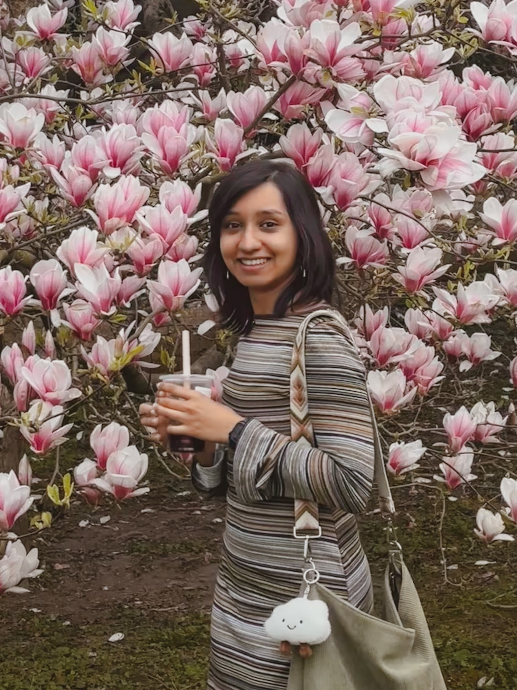

Chinmayi Subramanya
Doctoral Researcher
IMPRS BioMAP, MPI CBG
Advised by Carl Modes
I am a second-year doctoral researcher in the International Max Planck Research School for Biology, Mathematics, AI, and Physics, at the Max Planck Institute of Molecular Cell Biology and Genetics.
My work focuses on modeling complex biological flow networks, using mathematical and physical approaches to understand their three-dimensional organization, interconnectedness, and implications for physiological function.
I previously studied physics at the Indian Institute of Science Education and Research (IISER) in Mohali, India.
Research
Organs often contain several flow networks woven through the same three-dimensional space. In the liver, blood sinusoids and bile canaliculi form distinct cyclic networks that can be linked in ways that make them impossible to separate without cutting. We call this interlinking ensnarlment.
My work develops mathematical and physical ways to characterize these ensnarled architectures and asks what their spatial organization means for physiology.
- CharacterizeBuild measures that retain both the geometry and topology of real, spatially embedded networks.
- CompareUse synthetic systems and biological imaging data to identify recurring forms of network organization.
- ConnectRelate network architecture to transport, development, and function in living tissues.
Papers
GEMINI: Generalized Ensnarlment Measure from Incomplete-linkage of Network-network Interactions
A topology- and geometry-aware operator for characterizing incomplete linking and spatial associations between edges, tested on synthetic lattices and mouse brain vasculature.
Read on arXiv ↗